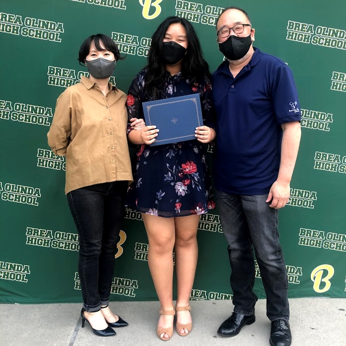
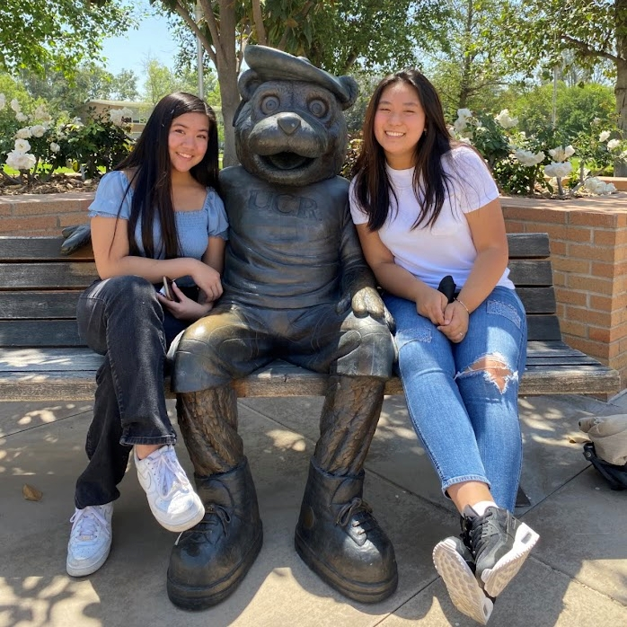
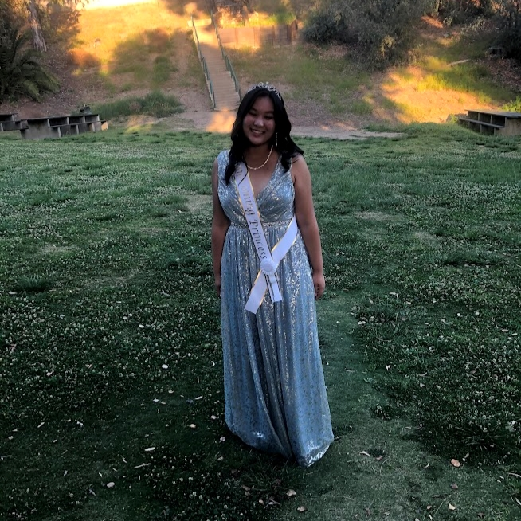
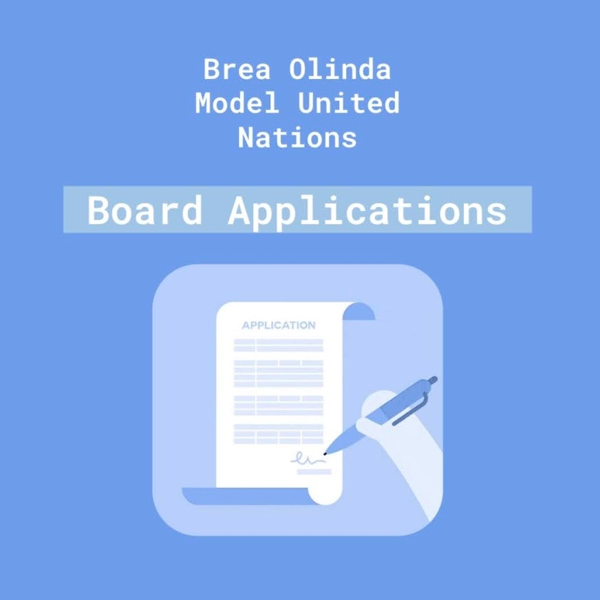
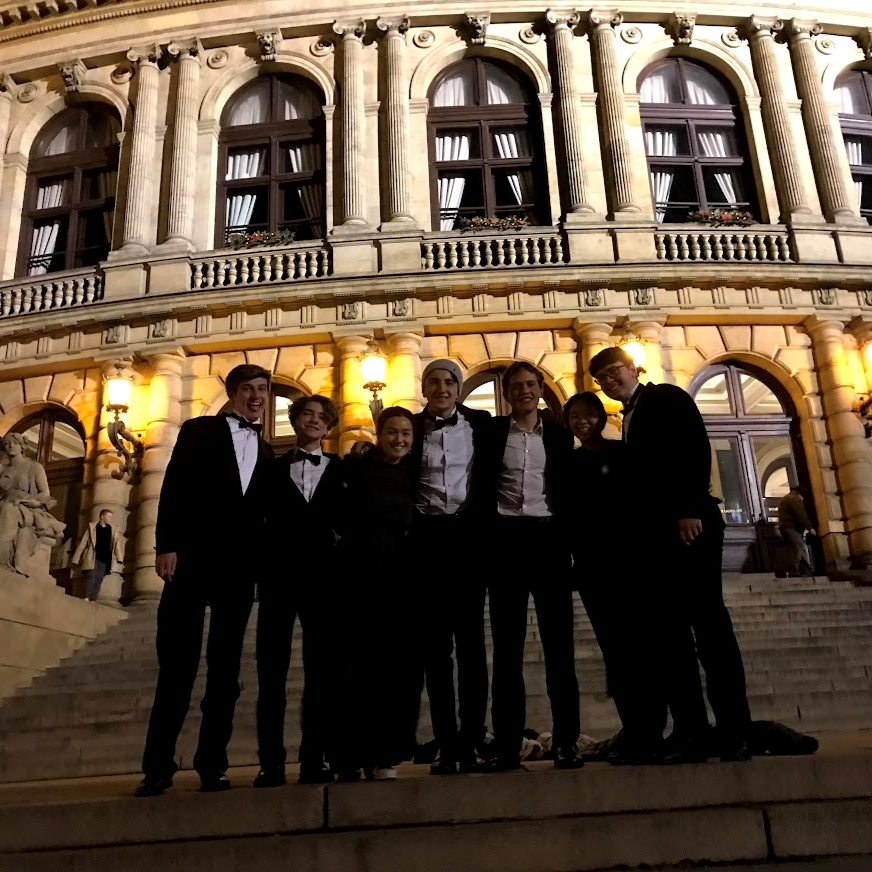
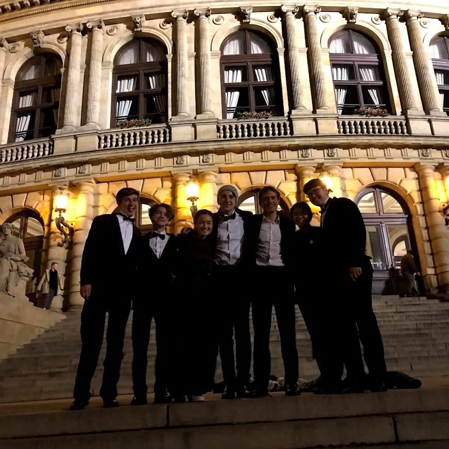
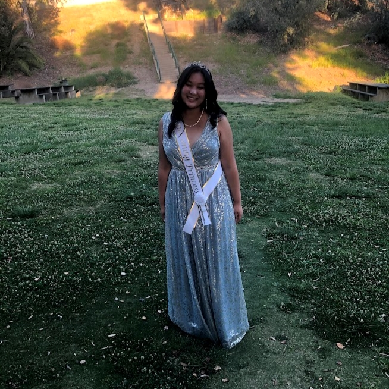
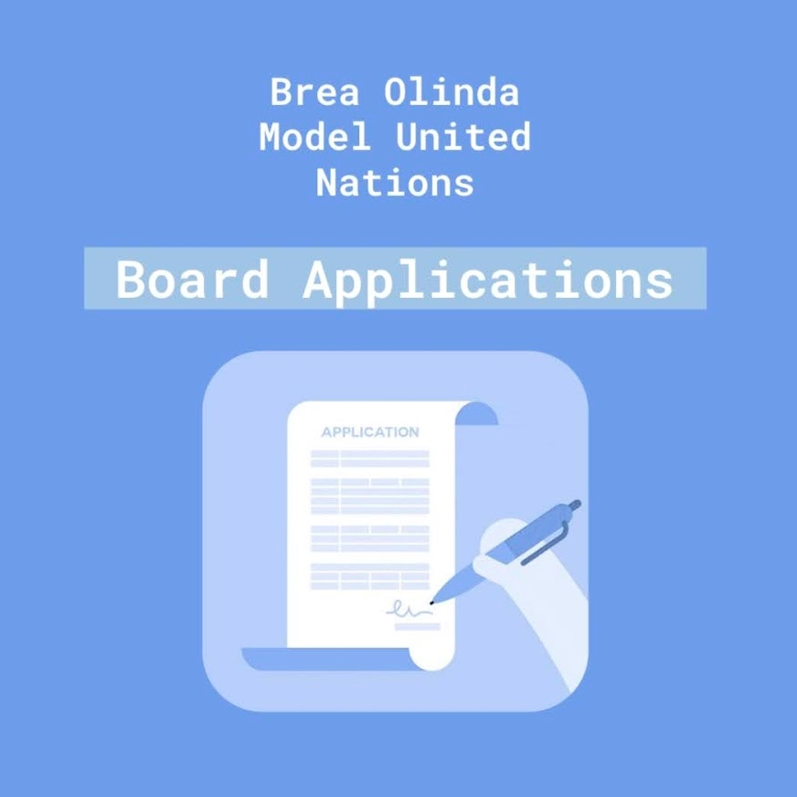
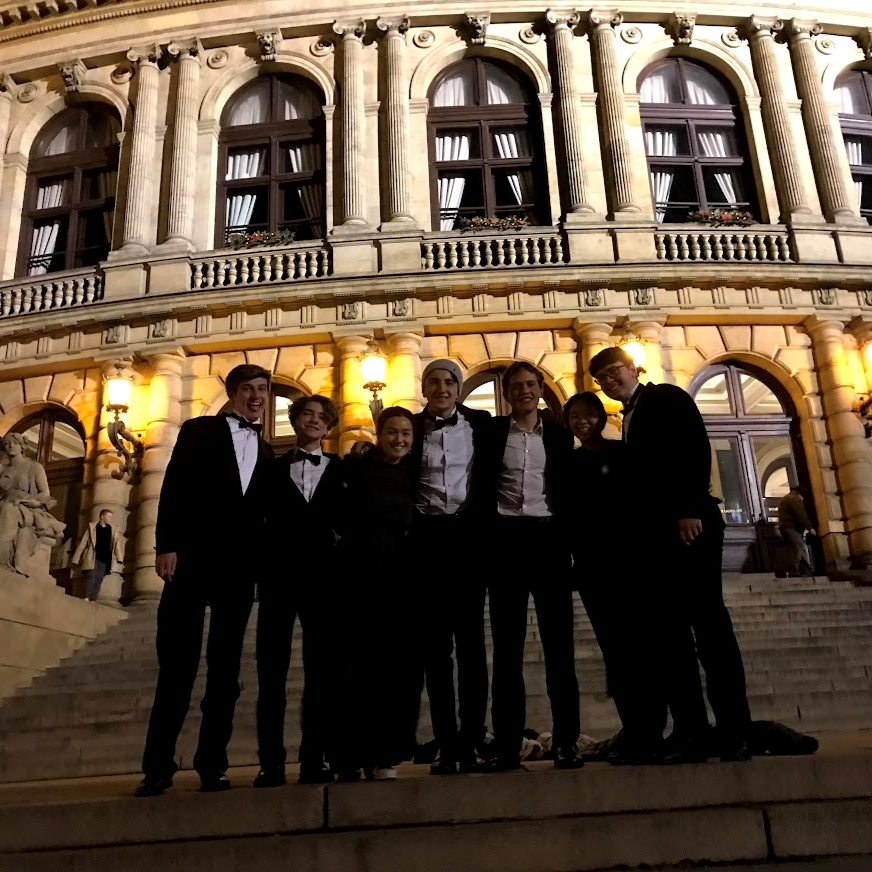

Camryn Pi
I'm a first year psychology major attending Univery of California, Riverside. I was born in New Jersey, moved to New York, and currently reside in California. I'm from Brea, Orange County and graduated from Brea Olinda High School. Most of my experience is from my high school extracurriculars. I was president of Science Olympiad, HOPE Global Outreach Foundation, and Model United Nations. I was secretary of Red Cross, and Vice president of RAISE Humane Foundation. I was also a part of the National Honors Society in my Junior and Senior Years and won the Mayors award. Over the summer before my first year, I worked at Fire Wings the front of the house.
I became President after participating in my first conference. As president of MUN, I planned and organized club rush and international week, scheduled and registered for conferences, run school meetings, organize out-of-school meetings, collected conference fees, provided information for current and upcoming conferences, coordinated with board members and the advisor.
I participated in Science Olympiad in middle school and became an active member of the high school team since my sophomore year. I joined the year after it was re-established as an official club at Brea Olinda and the following year, I became president to maintain the club’s activity and expand its membership. I was one of the writers for the RAISE Human Foundation’s instagram. I wrote about Environmental, Humanitarian, and Animal rights issues, educating our followers and informing them on how to help. I was also Brea Olinda RAISE Club’s treasurer where I managed our clubs funds and get fundraisers approved. The following year I became the club’s Vice President, working closely with the new president to help lead the club for its prospective years. I started a new Hope branch in Brea with students from Valencia High School and Brea Olinda High School. We raised funds by recycling water bottles and selling chocolate bars to contribute money and food donations to the orphaned refugees in several countries. We were also involved in direct community service efforts, such as recycling drives, street/beach cleanups, and tutoring. We started a peer tutoring program at the Brea Public Library.
I was also Captain of my Varsity tennis team. In 2017, I joined the junior varsity tennis team at Valencia High School as a Doubles 3 Starter. In 2018, I joined the varsity tennis team at Brea Olinda High School as a sophomore. In my junior and senior year, I was the varsity team captain and was the Doubles 1 Starter. I played tennis for 6 years and played an essential role in the team. I was also the principle in my youth orchestra. I started playing clarinet in 5th grade and participated in Concert Band–the highest level band– during middle school. Instead of joining High School Band, I continued my participation in SCYSO and became Principal 2nd in 2016-2017 and Principal 1st from 2018-now. I have been on 2 international tours, performing in Austria, Germany, and Czech Republic as well as performing my own clarinet solo in Leipzig. I won two second place awards in two different competitions: Diamond Bar Performing Arts Contest and New York International Music Concours.
Experience
Front of the House
• Took and packaged orders
• Sent out orders to tables
• Cleaned the restaurant, opened and closed, prepared for the next shift, and stocked up in the front
President
• Planned and organized club rush and international week, scheduled and registered for conferences
• Run school meetings, organize out-of-school meetings, collected conference fees
• Provided information for current and upcoming conferences, coordinated with board members and the advisor
Campaign Intern
• Made phone calls 5+ hours a week to canvas surveys on issues regarding Southern California
• Helped provide Young Kim with data and work with their team to promote and advocate for her campaign
• Attending weekly meeting to report progress and get any questions or concerns answered
Education
UC Riverside
Portfolio




 

 
